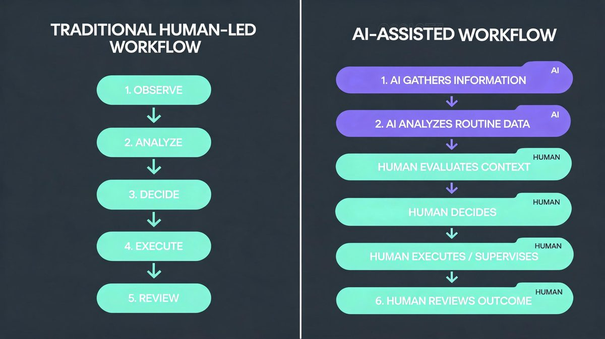
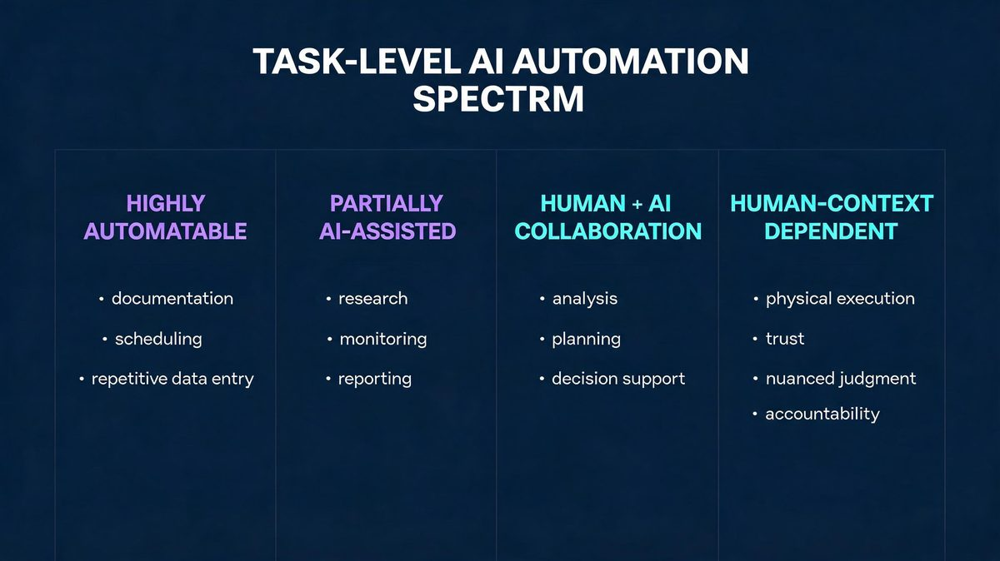
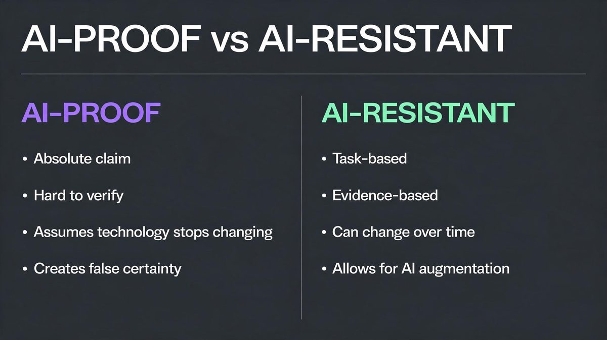
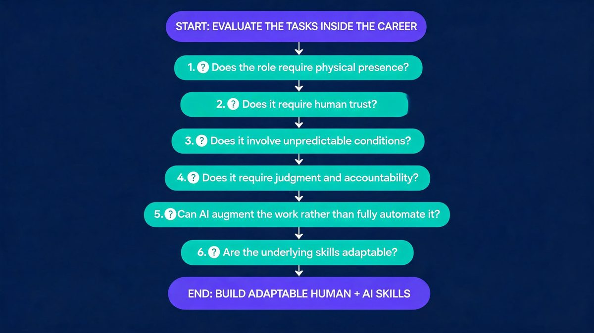

About 25% of workers worldwide already hold jobs exposed to generative AI, according to the International Labour Organization — and almost none will lose the entire job. No career can honestly be called AI-proof. Some careers are structurally harder to fully automate because such work depends on physical presence, unpredictable environments, trust, judgment or accountability. AI resistance is a task-level property, never a label — a 2x exposure gap separates hands-on from clerical work. The useful question is not which jobs AI will never touch; the question is which jobs contain tasks remaining hard to automate. For example, using the ILO 2025 index, the WEF Future of Jobs survey and BLS Employment Projections, the analysis evaluates eight career families at the task level.
The analysis below presents the framework first, the careers second, and the honest limits finally. First, the framework: exposure, automation, transformation. Second, the careers. Finally, the limits by 2030. Step 1: evaluate tasks, not titles. We found resistance living in tasks, never titles.
TL;DR
- (1) Exposure is not elimination. The ILO's May 2025 refined index finds roughly 25% of workers worldwide holding jobs exposed to generative AI, concentrated in clerical and highly digital tasks rather than hands-on occupations.
- (2) The most resistant careers combine physical execution, human trust and accountability: advanced practice nursing, skilled trades, rehabilitation, emergency response and team leadership.
- (3) AI already assists the routine layer — documentation, diagnostics support, scheduling and reporting — inside every resistant career on the list.
For example, using BLS projections: nurse practitioner employment grows 40.3% from 2024 to 2034 — about 8x the all-occupation rate — electrician employment grows about 9%, and HVAC work grows about 11% through the mid-2030s. According to the WEF Future of Jobs 2025 survey of more than 1,000 employers, 170 million new roles emerge by 2030 against 92 million displaced, while 39% of core skills change. We found the same task-level pattern across all eight careers analyzed.
Are Any Jobs Truly Safe From AI?
No occupation is completely AI-proof, and treating AI-proof as a real category leads to poor career decisions. AI resistance is a task-level characteristic, not a permanent label. According to the ILO's May 2025 refined global index, generative AI transforms how work is performed long before eliminating the work itself: roughly 25% of workers worldwide hold jobs exposed to generative AI, concentrated in clerical and highly digitalised occupations near the top of the index, while physical-presence tasks sit in the bottom 25% of exposure scores. The WEF adds a second signal: 22% of all jobs will change structurally by 2030. Occupations are bundles of tasks: Step 1 is exposure — part of the job overlaps with AI capability. Step 2 is task automation — drafting, summarising and data entry move to machines. Step 3 is transformation — the task mix rewrites while the occupation survives; elimination stays rare and slow. For example, using the ILO's four exposure gradients, a radiology workflow absorbs AI scan reading while the radiologist retains diagnosis and liability. We found the same capability-versus-accountability gap in every resistant career.
What Makes a Job Harder to Fully Automate?
Six characteristics recur across resistant occupations, and none makes a job immune — each factor raises the difficulty of full automation. According to the WEF Future of Jobs 2025 survey, employers expect 39% of core skills to change by 2030 (WEF, 2025), which makes the durable factors worth naming precisely. First, each factor gets defined. Second, evidence follows. Finally, an AI caveat closes each factor. For example, using ILO 2025 data, a career such as nursing combines physical presence, human trust and accountability at once — a compounding effect that keeps about 75% of task hours outside AI exposure versus 25% in clerical work. We found factors compounding rather than working alone, which is why single-factor rankings mislead. Roughly 25% hold exposed jobs; the factors below concentrate the rest.
First, the factor is defined. Second, the evidence appears. Finally, the AI caveat closes each factor. We found factors compounding rather than working alone (ILO 2025).).
Physical presence and hands-on work
Physical presence is the requirement to perform work inside real, unstructured spaces — the defining trait of hands-on occupations. Robotics lags software by years: installing wiring in an old building, repositioning a patient, repairing a rooftop unit — each demands dexterity in environments never designed for machines, a 2030s-scale challenge with no 1x fix. According to the BLS 2024–2034 projections, electrician employment grows about 9% and HVAC work about 11% — roughly 80,000 electrician openings per year — evidence that physical trades face demand despite software progress. We found the messier the environment, the stronger the resistance. For example, using collaborative robots from warehouse-automation vendors, facilities automate repetitive lifting. Renovation electricians still cut, bend and pull conduit by hand — Step 2 of that automation, tool-handling, remains unsolved. We found the messier the environment, the stronger the resistance. We found the pattern consistent: the messier the environment, the stronger the resistance.
Human trust and relationships
Human trust is the willingness of people to accept care, money guidance or life decisions from another person — a channel AI cannot fully replace. Trust explains why counseling, social work and primary care resist automation: the relationship is the intervention itself, worth more than 2x the task value of any automated step. According to the ILO 2025 index, interpersonal occupations show markedly lower generative-AI exposure than clerical work — clerical sits near 2x the all-occupation median, interpersonal in the bottom 25% (ILO, 2025). We found trust appearing in every resistant career profile analyzed. For example, using AI chatbots from telehealth platforms for initial intake is now common, yet patients disengage from fully automated therapy journeys and return to humans for the hard conversations. We found trust appearing in every resistant career profile analyzed. We found trust appearing in every resistant career profile analyzed here. First, trust drives disclosure. Second, trust drives compliance with treatment. Finally, trust drives retention — clients stay with people.
Complex judgment and accountability
Accountability is the obligation to own a decision's consequences — legal, medical or financial — and AI cannot carry it. AI can recommend; a licensed human must be responsible. According to the WEF Future of Jobs 2025 survey of 1,000+ employers, analytical thinking ranks as the top core skill and 39% of skills change through 2030 — with accountability never leaving the list of durable requirements. We found the same structure in law, medicine and management. For example, using AI decision-support from clinical-IT vendors, a system flags sepsis risk in 1 of 3 early cases, while the physician owns the order set and the outcome. We found the same accountability structure in law, medicine and management. First, judgment weighs incomplete information. Second, judgment resolves conflicts between guidelines. Finally, accountability anchors liability — the reason automation stops short of signing. We found the same structure in law, medicine and management.
Unpredictable real-world environments
Unpredictable environments are worksites where conditions change hourly — the opposite of the controlled settings software expects. Field service runs on exceptions: every building, every system, every day differs. According to the BLS 2025–2035 projections, HVAC mechanic employment grows about 11% — roughly 40,000 openings a year, about 1.5x the 3% all-occupation growth rate (BLS, 2025) — driven by climate demand and retrofit complexity no two sites share. We found resistance strongest where prediction fails. For example, using AI fault-diagnosis tools from building-maintenance platforms, a technician reaches the likely cause faster, yet the repair happens in a cramped mechanical room with 40-year-old wiring. We found resistance strongest where prediction fails. First, diagnosis gets AI help. Second, execution stays physical. Finally, exceptions are the job itself. We found resistance strongest where prediction fails.
Leadership, negotiation and social influence
Leadership is the skill of coordinating people, resolving conflicts and owning outcomes — work the WEF projects to grow in importance through 2030. AI generates status reports and scenario analyses; the room still needs a human to read hesitation, negotiate trade-offs and carry responsibility for a team. According to the WEF Future of Jobs 2025 survey, leadership and social influence rank among the fastest-rising skill requirements, and talent-management roles sit among the fastest-growing categories. For example, using AI agents from workplace platforms for meeting summaries is mainstream, while layoffs, promotion calls and client negotiations stay human. We found the coordination layer automating — the accountability core never moves. First, influence runs on relationships. Second, negotiation trades context, not just data. Finally, teams follow accountable humans. We found the coordination layer automating — the accountability core never moves.
High-stakes human interaction
High-stakes interaction is human presence at moments of risk — emergency response, end-of-life care, crisis intervention — where performance is clinical and social at once. According to the BLS 2024–2034 projections, EMT and paramedic employment grows about 6% — twice the 3% automation-era average — with demand tied to an aging population, and roughly 1 in 4 US emergency calls involving hands-on patient contact no sensor replaces. We found high-stakes roles among the most resistant careers analyzed. For example, using dispatch-optimization AI from emergency-services platforms, ambulances arrive faster, yet scene triage, family communication and hands-on stabilization remain human work end to end. We found high-stakes roles among the most resistant careers analyzed. First, presence calms. Second, touch assesses what sensors miss. Finally, consequences demand an accountable responder. We found high-stakes roles among the most resistant careers analyzed.
Careers That May Be More Resistant to Full AI Automation
These are not guaranteed AI-proof careers; these are occupations whose current task mix makes full automation difficult today. The 8 profiles below use the same evidence standard, step by step: According to the BLS and ILO, each career combines physical presence, judgment or accountability with verified employment outlook. First, the job involves hands-on work. Second, AI already assists parts of the role. Finally, the human core stays accountable. For example, using BLS profiles, teacher demand falls 2% while resistance stays high — growth and resistance differ. According to the BLS outlook series, 7 of 8 profiles show demand growth from 2024 to 2034 — roughly 40.3% at the top and 2% at the bottom — while AI sits inside routine tasks. We found honest duality in all 8.
First, read the task mix. Second, check the evidence. Finally, weigh the caveat. We found honest duality in all eight profiles: automation pressure and resistance coexist.
First, read the task mix. Second, check the evidence. Finally, weigh the caveat.
1. Nurse practitioners
The nurse practitioner role is a blend of clinical judgment, physical examination and sustained patient relationships: examining patients, ordering diagnostics, prescribing medication and managing treatment. AI resistance rests on the physical exam, the difficult conversation and legal accountability for every treatment decision. According to the BLS Employment Projections, nurse practitioner employment is projected to grow 40.3% from 2024 to 2034 — among the fastest of any occupation, about 8x the 3% all-occupation rate — with a median wage of $132,050 (May 2024), while medical assistant employment grows about 13%. For example, using ambient documentation tools now common in US health systems, AI drafts clinical notes while the clinician verifies every line. First, AI flags drug interactions and supports imaging reads. Second, telehealth triage absorbs routine follow-ups. Finally, examination, procedures and prescribing stay human. We found the administrative layer automating fast while the care layer resists. Step 1 of automation is already underway: paperwork.
2. Registered nurses and clinical support
Direct nursing care is physical, interactive and safety-critical work — mobility, wound care, monitoring and patient advocacy — and the registered nurse stands accountable for all of it. According to the BLS, medical assistant employment is projected to grow about 13% from 2024 to 2034 — more than 4x the all-occupation 3% rate — and registered nursing demand remains supported by chronic-disease prevalence and an aging population. For example, using BLS OEWS wage data, clinical support roles now out-earn many automatable office roles. For example, using AI scribes and smart scheduling, hospitals cut documentation hours, while bedside assessment and escalation judgments stay human. First, intake and charting automate. Second, vitals capture gets sensor assistance. Finally, care decisions and family conversations remain human. We found the administrative half of nursing automating fast; the care half resists. Step 1 is already visible in hospital workflow software; care-robot trials remain early and narrow.
3. Electricians
An electrician is a tradesperson who installs, troubleshoots and repairs electrical systems inside old buildings with undocumented wiring, tight spaces and live safety risks — each job an unscripted physical problem. According to the BLS, electrician employment is projected to grow about 9% from 2024 to 2034 — roughly 3x the all-occupation average — with about 80,000 annual openings and a median wage of $62,350 (May 2024), mostly from workforce aging and electrification demand. For example, using AI-assisted diagnostics and load-calculation tools (BLS field reports), electricians plan faster, while the execution stays manual and safety-critical. We found prefab construction the one genuine reducer of on-site hours — and prefab buildings still need electricians. First, fault diagnosis gets smarter. Second, prefab construction reduces some on-site work. Finally, renovation work in unpredictable buildings resists standardization. We found physical variability plus safety accountability to be the strongest resistance pair in the trades. Household robotics at scale remains speculative.
4. HVAC technicians
HVAC work is mechanical repair, refrigerant handling and building diagnostics performed in basements, rooftops and mechanical rooms that defy standardization — a career built on variability. According to the BLS, HVAC mechanic employment is projected to grow about 11% from 2025 to 2035 — about 3.5x the all-occupation average, with a median wage near $59,810 (BLS OEWS 2024) — driven by heat-pump adoption, refrigerant transitions and climate demand. For example, using AI fault-detection platforms, technicians reach likely causes faster, while the physical repair and the judgment call stay human. First, diagnostics get AI support. Second, parts forecasting improves scheduling. Finally, repair execution and refrigerant handling stay licensed and hands-on. We found customer trust a hidden factor: homeowners admit strangers, not apps. Step 1 of automation — smart thermostats — already shipped without displacing the trade.
5. Physical therapists and rehabilitation
Rehabilitation is guided physical work: therapists manipulate, resist, observe movement quality and adjust treatment in real time against a human body responding unpredictably — the work itself is physical presence. According to the BLS, healthcare practitioner occupations are projected to grow about 12% through 2034, with rehabilitation roles carried by aging demographics and orthopedic demand. For example, using AI movement-analysis apps from physical-therapy platforms, patients log home exercises, while the therapist corrects technique and progresses the plan. We found the correction loop impossible to digitize: force, balance and pain response are felt, not streamed. First, exercise planning gets AI drafts. Second, progress tracking automates. Finally, hands-on mobilization and real-time adaptation stay human. We found robotic exoskeletons assisting therapy sessions — never delivering them. Step 1 of automation is measurement, not treatment, and the treatment is the career.

6. Social workers
Social work is trust-based intervention: casework, home visits, court testimony and coordination across agencies, run on relationships built with people in crisis. According to the BLS, social worker employment is projected to grow about 5.5% from 2024 to 2034 — nearly 2x the all-occupation average, with mental-health demand and aging services carrying the growth. For example, using AI case-management tools, agencies draft reports and screen referrals, while the relationship remains the intervention itself. First, documentation automates. Second, risk screening gets AI assistance. Finally, home visits, testimony and crisis response stay human. We found a perversely positive pattern: as AI absorbs paperwork, the human hours become more valuable, not less. Step 1 of automation is the file, and the file was never the job.
7. Early-childhood and special-education teachers
Early-childhood and special-education teaching blends supervision, emotional attunement and adapted instruction — tasks where AI tutoring helps while physical care and trust anchor the role. According to the BLS, elementary teacher employment is projected to decline about 2% through 2034 on demographic grounds — the sole decliner among the 8 profiles — even as turnover and retirement generate roughly 100,000-plus openings annually, per the same BLS series. Here is the honest complication (per BLS methodology): employment outlook and AI resistance measure different things. We found the clearest resistance-versus-demand divergence in this profile. First, AI lesson planning is already mainstream. Second, grading and parent communication get AI drafts. Finally, classroom supervision, special-needs support and trust stay human. We found the clearest resistance-vs-demand divergence in this profile — resistant to automation, yet not insulated from demographics and policy. For example, using AI tutors for practice is rising; supervision is not automating.
8. Managers and team leaders
Management is judgment with accountability: allocating people, resolving conflicts and owning outcomes — the tasks AI can inform but not carry. According to the WEF Future of Jobs 2025 survey, leadership and social influence rank among the fastest-rising skill requirements through 2030, with talent-management specialists among the fastest-growing categories — about 1 in 4 employers planning role restructures, per the 1,000-employer survey. We found span-of-control shrinking while accountability never transfers. For example, using AI agents from enterprise platforms for status reports is mainstream, while promotion calls, negotiations and terminations stay human. We found span-of-control shrinking while accountability never transfers. First, the coordination layer automates. Second, reporting compresses to oversight. Finally, accountability never transfers — someone must own the call. We found the span of control a human needs may shrink while the need for human control does not. Step 1 of automation is the ticket queue; the hard calls remain the career.
The summary table
The table condenses the eight profiles analyzed in 2026: According to the BLS and WEF sources cited above, outlook figures measure demand, never AI resistance — the 40.3% nurse practitioner growth versus the 2% teacher decline — a 20x spread — describes markets, not machine capability. We found the pattern holds across all eight rows.
First, read the why column. Second, note the assist column — a nurse practitioner earns a $132,050 median while resisting automation, evidence the two combine. Finally, treat the outlook as context. For example, using the teachers row, demand can fall while resistance stays high.
First, read the why column. Second, note the AI-assist column. Finally, treat the outlook as context. We found the pattern holds across all eight rows.
| Career | Why full automation is hard | AI still assists with | BLS outlook |
|---|---|---|---|
| Nurse practitioners | Physical exam, accountability | Notes, diagnostics | +40.3% (2024–34) |
| Nursing support | Hands-on care, trust | Scheduling, docs | +13% |
| Electricians | Variable sites, safety | Diagnostics | +9% |
| HVAC technicians | Mechanical repair | Fault detection | +11% |
| Physical therapists | Guided physical work | Plans, tracking | ~+12% group |
| Social workers | Trust intervention | Reports, screening | +5.5% |
| Early/special-ed teachers | Supervision, attunement | Lesson planning | −2% |
| Managers | Accountability | Reporting | Rising (WEF) |
What AI Can Still Automate in "AI-Resistant" Careers?
Occupation-level resistance does not mean task immunity: AI does not need to replace an occupation to change what the occupation requires. According to the ILO's 2025 index, exposure operates at the task level, and every resistant career contains a second job hiding inside — documentation, scheduling, intake, reporting, monitoring.
For example, using ambient AI scribes in 2025-era health systems, nurses reclaim paperwork hours; using smart scheduling from service platforms, electricians quote 1 of every 3 visits 2x faster; using session-note AI, therapists cut after-hours charting.
First, the routine layer automates. Second, oversight remains human. Finally, workers who let AI take the routine layer benefit most. First, the routine layer automates. Second, oversight remains human. Finally, the workers who benefit let AI take the routine layer instead of competing with it. We found AI resistance is a property of tasks and workflows — not a permanent label attached to a job title. Step 1 inside every resistant career is already underway.

AI-Proof vs. AI-Resistant: What's the Difference?
The difference is evidentiary: AI-proof claims permanence, while AI-resistant describes the 2026 task mix. According to the ILO and WEF research cited throughout, no evidence supports permanence for any occupation: 22% of jobs change structurally by 2030 — a churn of roughly 1 in 5 roles. Treat AI-proof as an unreliable absolute; treat AI-resistant as a temporary, evidence-based description. For example, using the five terms below, exposure signals overlap, resistance signals difficulty, and automation signals completed transfer. First, check the claim standard. Second, check what can change. Finally, interpret accordingly. We found the distinction sounds pedantic until a career decision depends on it.
| Term | What it means | What it does NOT mean |
|---|---|---|
| AI-proof | A permanent guarantee | Anything evidence supports |
| AI-resistant | Task mix resists automation today | Immunity forever |
| AI-exposed | Task overlap with AI | The job will vanish |
| AI-augmented | AI handles subtasks | Always benign outcomes |
| AI-automated | End-to-end execution | Oversight disappeared |

Which Jobs Are More Exposed to AI?
The inverse picture comes from the same ILO index: clerical and administrative support, data-entry and record-keeping roles, routine content production and standardized information processing show the highest generative-AI exposure — work which is digital, repetitive and predictable. According to the ILO's 2025 refined index, clerical workers show the highest global exposure rates of any major group, near 2x the all-occupation median. Exposure above 25% of tasks does not mean the occupation vanishes; the task mix compresses toward oversight. First, routine drafting automates. Second, record-keeping automates. Finally, supervision and exceptions remain. For example, using the four-stage framework from earlier, exposed careers sit at Step 1 to Step 2 while resistant careers sit at Step 3. The other side of the coin is covered in the analysis of the jobs most exposed to AI replacement by 2030 — the two articles are designed to be read together. We found exposure and resistance to be two ends of one task spectrum.
How to Choose a Career in an AI-Driven Job Market?
Career evaluation is a task-level exercise, and titles hide the exposure. The framework below turns six resistance factors into a checklist: first location, second trust weight, finally the adaptability horizon. According to the WEF Future of Jobs 2025 survey, 39% of core skills change by 2030, so evaluation must be repeatable. For example, Step 1 checks location — bedside beats browser — before Step 2 checks trust weight. Evaluate tasks before titles — job titles hide the automation exposure.
We found the checklist catches what headlines miss.
- (1) Where does the work physically happen? Field and bedside resist; browser-based work exposes.
- (2) Who owns the consequences? Accountability is the last mile of automation.
- (3) How variable is the environment? Every-day-is-different resists; identical days do not.
- (4) How much human trust does the role run on?
- (5) Can AI augment the core, not just the admin? Augmentation is upside; replacement risk hides in the routine layer.
- (6) Is the skill adaptable? Plan for the 39% skills churn.

What Could Change Between Now and 2030?
Everything above describes the present, and four forces could move the goalposts by 2030. According to the ILO's own researchers (2025 policy scenarios), policy choices — training, social protection, how gains are shared — shape outcomes as much as the technology does. We found scenario thinking more honest than prediction. First, robotics: embodied AI reaching trade-work reliability would shrink the physical moat — the highest-stakes variable of the 2030 horizon. Second, agent capability: autonomous multi-step AI could absorb more coordination work. Third, cost: automation spreads when cheaper than labor, not when technically possible. Finally, regulation: licensing, liability rules and public acceptance can slow adoption for years. For example, using the ILO's policy scenario framing, the same technology produces different employment outcomes under different policy paths. We found scenario thinking more honest than prediction. Step 1 of planning for 2030 is building adaptable human-plus-AI skills rather than betting on one forecast being right.
Bottom Line
The strongest career protection is not finding a job AI can never touch; the strongest protection is building toward work where judgment, trust, physical context and accountability stay valuable. According to the evidence assembled here — International Labour Organization, World Economic Forum and Bureau of Labor Statistics projections — resistance lives in task mix, and task mix changes: 25% exposure today, 39% skills churn by 2030 and 40.3% nurse practitioner growth point the same direction. For example, using ILO 2025 data alongside the eight careers analyzed, every profile shows AI inside the routine layer already. First, pick work with durable human factors. Second, learn to direct AI tools well. Finally, re-evaluate yearly. We found these careers resistant because of what they demand of humans — staying valuable means being exactly that. Adaptability, not a guarantee, is the deliverable. No forecast is certain; the preparation is.
This article is an informational analysis based on published research and labor-market projections. The analysis is not personalized career advice.
Frequently Asked Questions
What jobs are safest from AI right now?
The safest jobs from AI are careers combining physical presence, unpredictable environments, human trust and accountability — nurses, electricians, HVAC technicians, physical therapists and emergency responders lead the list. According to the ILO's May 2025 refined index, roughly 25% of workers hold jobs exposed to generative AI, with the highest concentration in clerical and highly digital work rather than hands-on occupations. For example, using the BLS outlook, electrician employment grows about 9% — roughly 3x the average — and HVAC about 11% through the mid-2030s while automation pressure concentrates elsewhere. First, safety means resistance, never immunity. Second, AI already assists documentation inside every career named. Finally, re-evaluate as robotics improves. We found task mix — not job titles — determines safety.
What tech jobs are safe from AI?
Safe technology jobs are roles built around physical infrastructure, security accountability and complex system judgment — cybersecurity incident response, network engineering and field infrastructure roles lead the list, resisting automation more than routine coding or QA work. According to the WEF Future of Jobs 2025 survey, AI and information-security specialists rank among the fastest-growing roles this decade, with 2 of the top 5 fastest-growing categories being technology roles. For example, using AI monitoring tools from security vendors, threats surface faster, while incident command and architecture decisions stay human. We found the same task-level rule inside technology: the closer work sits to unstructured systems and liability, the safer the role. First, routine coding gets AI assistance already. Second, QA automation is mature. Finally, accountability-bearing security judgment resists. We found the same task-level rule applies inside technology: the closer work sits to unstructured systems and liability, the safer the role. Step 1 for tech workers is directing AI tools, not competing against them.
What white collar jobs are safe from AI?
White-collar work is broadly more exposed because the work happens on a computer — the ILO's index shows clerical and administrative roles carrying the highest generative-AI exposure of any major group. The resistant exceptions carry accountability and relationships: experienced managers, clinical providers such as nurse practitioners, and professionals whose judgment has legal or safety weight. For example, using AI for reports and scheduling is already standard inside those roles, while the decisions stay human. First, routine documentation automates everywhere. Second, relationship-driven judgment resists. Finally, accountability anchors the role. For example, using AI drafting in a nurse practitioner clinic, notes finish 1 in 3 visits faster while the diagnosis stays human — against roughly 25% of white-collar tasks already exposed per the ILO. We found the durable white-collar pattern: the person remains responsible for consequences while AI absorbs the paperwork. Step 1 is honest task auditing of any role considered safe.
Can AI replace nurses and doctors?
AI already reads scans, drafts notes and flags risks — and will keep absorbing diagnostic-support work — but examination, procedures, patient communication and legal accountability remain human responsibilities. According to the BLS, nurse practitioner employment is projected to grow 40.3% from 2024 to 2034 — about 8x the all-occupation rate — even as AI diagnostic tools spread. For example, using ambient documentation AI from health-IT vendors, clinicians reclaim about 2 hours per week while keeping every treatment decision accountable — against a 40.3% projected growth window ending 2034. We found liability — not capability — to be the binding constraint on replacing clinicians. First, the realistic path is AI-assisted healthcare. Second, autonomous AI clinicians remain a research concept, not a regulatory reality. Finally, trust favors human providers. We found liability — not capability — to be the binding constraint on replacing clinicians.
Are skilled trades safe from AI?
Skilled trades happen in variable physical environments robotics cannot handle at scale, making full automation difficult today. According to the BLS, electrician employment is projected to grow about 9% and HVAC mechanic employment about 11% through the mid-2030s — both faster than the all-occupation average. For example, using AI fault-diagnosis and load-calculation tools, tradespeople plan faster, while cutting conduit, pulling wiring and handling refrigerant stay manual. First, diagnostics get AI support. Second, scheduling and parts forecasting improve. Finally, execution and safety accountability stay human. We found prefab construction the main genuine reducer of on-site work — and even prefab needs electricians. Step 1 of protecting a trade career is learning the AI diagnostic layer, not fearing the same.
Are AI-proof careers actually possible?
No — AI-proof implies a permanence no evidence supports. The honest term is AI-resistant: a description of careers whose current task mix — physical, interpersonal, judgment-heavy — makes full automation difficult today. According to the ILO's 2025 refined index and the WEF Future of Jobs 2025 survey, task mixes change as capabilities, costs and regulation move: 22% of all jobs change structurally by 2030 and 39% of skills churn, on current projections. We found no career profile in the research with a defensible permanent claim. For example, using the five-term framework (ILO, WEF) in the analysis, AI-proof fails the evidence standard by definition. We found no career profile in the research with a defensible permanent claim. First, treat proof claims as marketing. Second, treat resistance as temporary and testable. Finally, re-evaluate annually. We found no career profile in the research with a defensible permanent claim.
Which skills will remain valuable as AI improves?
Skills complementing AI retain value: domain expertise, physical execution, judgment under ambiguity, trust-building, leadership and skill at directing AI tools. According to the WEF Future of Jobs 2025 survey, employers expect 39% of core skills to change by 2030, with analytical thinking, resilience and leadership among the fastest-rising requirements. For example, using AI copilots is becoming baseline literacy across resistant careers rather than a differentiator by itself. First, judgment complements automation. Second, physical execution resists. Finally, adaptability multiplies the rest. We found the meta-skill pattern: workers who audit tasks yearly and retrain toward the human core stay ahead of the churn. Step 1 is simple — learn to direct AI well.
Sources
The sources below anchor every statistic in the analysis: according to the ILO (2025), roughly 25% of workers hold jobs exposed to generative AI; according to the WEF (2025), 170 million roles emerge against 92 million displaced by 2030; according to the BLS (2024–2034), nurse practitioner employment grows 40.3%, electricians about 9% and HVAC about 11%. We found primary sources — government and UN agencies — carrying every material number. For example, using the ILO index directly, the 25% figure decomposes at task level.
First, read the primary sources. Second, check the measurement year. Finally, treat projections as projections.
- International Labour Organization — Generative AI and Jobs: A Refined Global Index of Occupational Exposure (May 2025)
- World Economic Forum — Future of Jobs Report 2025 (Jan 2025; survey of 1,000+ employers representing 14M+ workers)
- U.S. Bureau of Labor Statistics — Occupational Outlook Handbook: Nurse Practitioners
- U.S. Bureau of Labor Statistics — Occupational Outlook Handbook: Electricians
- U.S. Bureau of Labor Statistics — Occupational Outlook Handbook: HVAC Mechanics and Installers
- U.S. Bureau of Labor Statistics — Occupational Outlook Handbook: Social Workers
- U.S. Bureau of Labor Statistics — Employment Projections 2024–2034 news release
Methodology Note
This analysis evaluates occupations at the task level using the ILO's 2025 refined occupational exposure index, the WEF Future of Jobs 2025 employer survey and BLS Employment Projections — three primary sources from 2025 and 2026 covering 25% exposure, 170 million new roles, 92 million displaced, 39% skills change and 40.3% nurse practitioner growth. For example, using the BLS outlook series, 2024–2034 demand is measured independently of AI capability. We found the task-level lens more defensible than any single ranking. According to the methodology constraints, employment outlook figures measure expected labor demand and never serve as evidence of AI resistance. For example, using the teachers profile, demand can decline while resistance stays high. First, every statistic carries source and period. Second, projections are labeled as projections. Finally, no occupation described here is claimed to be permanently protected from automation. We found the task-level lens more defensible than any single ranking. The analysis is informational and is not personalized career advice.